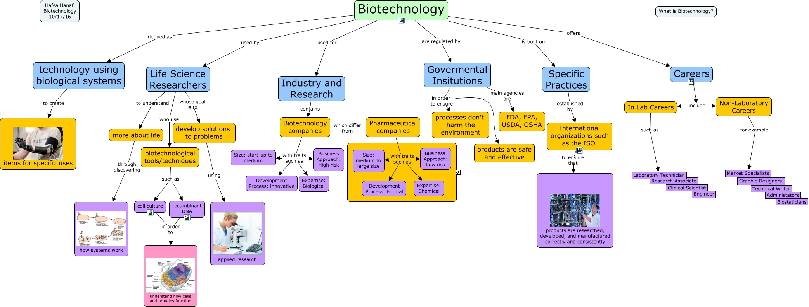

WARNING:
JavaScript is turned OFF. None of the links on this concept map will
work until it is reactivated.
If you need help turning JavaScript On, click here.
This Concept Map, created with IHMC CmapTools, has information related to: What is Biotech, In Lab Careers such as Laboratory Technician, Biotechnology companies with traits such as Expertise: Biological, Biotechnology companies which differ from Pharmaceutical companies, biotechnological tools/techniques such as recumbinant DNA, technology using biological systems to create items for specific uses, Pharmaceutical companies with traits such as Development Process: Formal, Life Science Researchers to understand more about life, Govermental Insitutions main agencies are FDA, EPA, USDA, OSHA, Life Science Researchers who use biotechnological tools/techniques, biotechnological tools/techniques such as cell culture, Biotechnology used for Industry and Research, Careers include Non-Laboratory Careers, more about life through discovering how systems work, Biotechnology is built on Specific Practices, Biotechnology companies with traits such as Size: start-up to medium, Pharmaceutical companies with traits such as Business Approach: Low risk, Specific Practices established by International organizations such as the ISO, International organizations such as the ISO to ensure that products are researched, developed, and manufactured correctly and consistently, cell culture in order to understand how cells and proteins function, Non-Laboratory Careers for example Market Specialists
